Canadian Not-for-Profit Corporation
加拿大联邦非牟利机构
Chan and Tea Culture International promotes Chan culture and tea culture.
国际禅茶文化联合会致力于弘扬禅文化与茶文化。

About Us关于我们
Chan and Tea Culture International is a federal not-for-profit corporation in Canada, incorporated on 2 January 2021. Its stated purpose is to share and to promote Chan Tea culture.
国际禅茶文化联合会是加拿大联邦非牟利机构，于2021年1月2日成立。宗旨是分享与弘扬禅茶文化。
Its headquarters is at 708 Ski Hill Road, Bethany, Ontario. The association holds Chan tea gatherings, Dharma lectures, temple visits, retreats and cultural exchanges in Canada and abroad, and works with temples and Buddhist communities of different traditions.
总部设于安大略省 Bethany, Ski Hill Road 708号。本会在加拿大及海外举办禅茶聚会、佛法讲座、参访寺院、静修与文化交流，并与不同传统的寺院及佛教团体合作。
Former name: The corporation was incorporated as International Chan Tea Culture Association on 2 January 2021. Its name was changed to Chan and Tea Culture International by certificate of amendment on 10 May 2024.
原名：该机构于2021年1月2日以 International Chan Tea Culture Association 之名成立，2024年5月10日更名为 Chan and Tea Culture International。
禅茶一味
Chan and tea are one flavour. Tea is a way into Chan: in preparing and sharing tea, the mind settles and rests in the present moment. Chan is the flavour of tea: the same clarity and quiet are tasted in the bowl.
禅茶一味。茶是进入禅的途径：在备茶与分享茶时，心安定下来，安住当下。禅是茶的味道：同样的清明与宁静，在一碗茶中品尝到。
Articles of Incorporation, Form 4001, item 4.
（Articles of Incorporation，Form 4001，第4项）
A world in which everyone is at peace and in harmony — realised first within our own minds — with only compassion and wisdom remaining. May all beings live together in harmony, in peace and auspiciousness.
愿人人和平和谐，先在自己内心体悟，唯留慈悲与智慧。愿众生和谐共处、平安吉祥。
Our Values价值观
Source: Wikipedia, Four Means of Conversion
本会的价值观取自佛教四摄法。
dāna
Giving of wealth, of Dharma, and of fearlessness.
财布施、法布施、无畏施。
priya-vacana
Kind, gentle and sincere speech, not flattery.
温和、真诚的言语，不是阿谀奉承。
artha-carya
Beneficial action in body, speech and mind, for the benefit of others.
以身、语、意行有益于他人的事。
samanarthata
Working together with beings, and guiding by example.
与众生共同做事，以身作则加以引导。
Activities活动
Activities include Chan Tea performance and the four areas below.
本会的活动包括禅茶表演、茶会、佛法讲座、书画与音乐分享、静修与养生，以及文化交流等广泛类别。
Recent Events近期活动
Join a gathering, offer your time, or simply come and share a bowl of tea.
参加禅茶聚会、奉献时间，或只是来一同品一碗茶。
Membership, volunteering and donations →会员、义工与捐赠 →